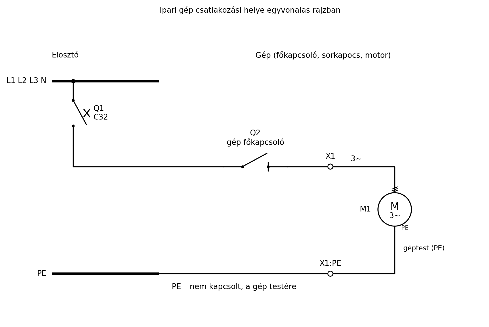

Statikus változat (mint a PDF-ben)
Egy ipari csarnokban a legjobb elosztóhálózat sem ér semmit, ha az egyes gépek csatlakoztatása rosszul sikerül. Ilyenkor jellemzően nem az történik, hogy „teljesen nincs áram”, hanem az, hogy a gép indításkor leoldja a kismegszakítót, a kábel időnként meleg, a fázissorrend hibája miatt a szivattyú ellenkező irányba forog, vagy a karbantartáskor hiányzik a megfelelő leválasztási pont. A csatlakozási hely a gép és az ipari elosztó közötti határ: ha itt a védelem, a kábel, a kapocscsatlakozás és a dokumentáció nem illeszkedik egymáshoz, akkor a hiba beépül a rendszerbe.
Ebben az alfejezetben azt építjük fel, hogyan kell kialakítani egy ipari fogyasztó csatlakozási pontját, mit kell ellenőrizni a gép és az elosztó határán, és milyen mérésekkel, dokumentumokkal adjuk át a csatlakoztatást biztonságosan.
Definíció. Ipari fogyasztói csatlakozási helynek azt a pontot nevezzük, ahol az üzemi elosztóhálózatból táplált tápkábel csatlakozik a gép, berendezés vagy részelosztó kapocs- vagy dugaszoló csatlakozójához. A csatlakozási hely jellemzően tartalmazza az elosztó oldali túláramvédelmet, a tápkábelt, a kábelbevezetést, a gépi főkapcsolót, a védővezető csatlakoztatását és az azonosító feliratokat.
A gyakorlatban a csatlakozási hely lehet:
A villanyszerelőnek azt kell megszerveznie, hogy a csatlakozási ponton a villamos teljesítmény, a védelem, a mechanikai kialakítás és a dokumentáció egyaránt illeszkedjen a gép gyártói előírásaihoz és a létesítési szabványokhoz.
Az alábbi egyvonalas rajz azt az alaphelyzetet mutatja, amikor az elosztó gyűjtősínjéről egy kismegszakító táplálja a gép betápláló vezetékét, a gépen pedig egy reteszelhető főkapcsoló és a gépi sorkapocs után következik a motor.

A rajzon Q1 az elosztóban elhelyezett csatlakozási pont
feletti védelem, Q2 a gép főkapcsolója, X1
pedig a gépi betápláló kapocs. A védővezetőt a gépi csatlakozóhelynél is
be kell kötni, és onnan a gép valamennyi vezetőképes testére, valamint
az egyenpotenciálra hozó rendszerre kell továbbvezetni. A rajz
egyvonalas; a kapcsolási rajzon ugyanez az áramkör három fázisvezetővel,
valamint külön N és PE érrel szerepelne.
A csatlakozási hely nem csupán fizikai csatlakozó, hanem villamos határpont is. Ezen a határon rögzíteni kell, hogy melyik berendezéshez tartozik a túláram-védelem, hol van a leválasztási pont, és hogyan csatlakozik a védővezető.
Szabály. Az ipari gép csatlakoztatásánál a
PE védővezetőt folytonosan, meg nem szakítva kell
kialakítani. A PE védővezetőbe kapcsolót, megszakítót vagy
biztosítót beiktatni tilos; a PE-t semmilyen
kapcsolókészülék nem szakíthatja meg. Dugaszolós csatlakozásnál a
PE-érintkező bedugáskor elsőként zár, kihúzáskor utolsóként
bont (a szabványos dugaszolók ezt szerkezetileg biztosítják). A gépi
főkapcsoló és megszakító PE-kapcsa csak átmenő, nem
kapcsolt kapocs. (ellenőrizendő: MSZ HD 60364-5-54, MSZ EN
60204-1)
Magyarországon a kisfeszültségű hálózati rendszer leggyakrabban
TN-C-S vagy TN-S rendszerű. A gépi csatlakoztatás a PEN
vezető szétválasztása után már csak L1, L2,
L3, N és PE vezetőket használ. A
gépet a PEN-vezető szétválasztása után külön
N- és PE-vezetővel kell táplálni; a
szétválasztási pont után az N és a PE vezető
többé nem köthető össze, és a gépen belül PEN-vezető nem
alakítható ki (ellenőrizendő: MSZ HD 60364-5-54, MSZ EN 60204-1).
Törvény. A túláramvédelemnek teljesítenie kell a
összefüggést, ahol:
A csatlakozási hely zárlatvédelmét is ellenőrizni kell. TN-rendszerben a hurokimpedanciának ki kell elégítenie a
feltételt, ahol
a fázis és a PE közötti szabványos feszültség,
pedig a védelmi készülék kioldási árama arra az időre, amelyet a
szabvány az adott áramkörre megenged. A tápkábel hosszát és
keresztmetszetét ez a feltétel is korlátozza, nem csak a melegedés.
Szabvány. A gépek villamos berendezéseire vonatkozó követelményeket az MSZ EN 60204-1 tartalmazza. A létesítés oldalát a kisfeszültségű villamos berendezések szabályait rögzítő MSZ HD 60364 sorozat, a kapcsoló- és vezérlőberendezésekre vonatkozó követelményeket pedig az MSZ EN 61439 sorozat és az MSZ EN 60947 készülékszabványok adják. A konkrét kioldási időket, határértékeket és terhelhetőségi adatokat a hatályos kiadás és a gyártói adatlapok szerint kell ellenőrizni.
Különbség. A gép főkapcsolója elsősorban leválasztó és karbantartást támogató kapcsoló. A vészleállítás ezzel szemben biztonsági funkció: a felismert veszélyhelyzetben azonnali, lehetőleg biztonságos állapotot hoz létre. A kettő nem cserélhető fel automatikusan.
A gép főkapcsolójának jellemzője, hogy kézi működtetésű, kikapcsolt állapotban reteszelhető, látható vagy megbízhatóan jelzett kapcsoló. Ez teszi lehetővé, hogy karbantartás előtt a gépet megbízhatóan leválasszuk. A vészleállító készülék ezzel szemben általában sárga háttér előtt elhelyezett piros, gombafejű, reteszelődő nyomógomb vagy kötélkapcsoló (ellenőrizendő: MSZ EN ISO 13850, MSZ EN 60204-1), és a biztonsági vezérlőrendszer része. A vészleállító áramkör megszakíthatja a motorvezérlő hurkot, a szelepet, a hajtást vagy akár a teljes betáplálást attól függően, hogy a gép kockázatértékelése mit ír elő. A vészleállítás után a gép előre nem várt újraindulást okozó módon nem állhat vissza automatikusan; a visszaállítás szándékos emberi beavatkozást igényel.
A csatlakozási hely kialakításánál ezért a szerelőnek rögzítenie kell:
PE vezető folyamatosságát a gépi sorkapocsig,Ipari gépeknél a motor túlterhelését gyakran a gép saját motorvédő kapcsolója vagy hőkioldója védi. Az elosztó oldali kismegszakító ilyenkor elsősorban zárlatvédelmet és kábelvédelmet lát el. A tápkábelt azonban úgy kell méretezni, hogy a kismegszakító névleges áramához illeszkedjen.
Ha a csatlakozás dugaszoló aljzaton keresztül történik, akkor a
hálózati csatlakozó és a kábel is a kiválasztott áramerősségű legyen. A
gyakori értékek: 16 A, 32 A, 63 A, 125 A. A 400 V-os dugaszoló aljzatok
jellemzően 3P+N+PE kialakításúak, a kódolásuk az 50 Hz-es
hálózatnak felel meg; a pontos szín- és óraállás-kódokat a gyártói
katalógus és az MSZ EN 60309 szabvány szerint kell kezelni.
Az alábbi ábra egy gép melletti csatlakozódobozt és az ötpólusú ipari dugót mutatja. A dobozon az 1 főkapcsoló a leválasztó: kikapcsolt (0) állásban a 2 lakatolási ponton reteszelhető. A 3 ablak mögött vannak a leágazás védelmei, alatta a 4 400 V-os (3P+N+PE) és az 5 230 V-os aljzat; a kábel a 6 tömszelencéken át alulról érkezik, a 7 a doboz PE-csatlakozása. Jobbra fent a dugó érintkezői láthatók: a 8 kódolóhorony miatt csak az illeszkedő aljzatba dugható, a 9 PE-érintkező nagyobb és hosszabb a többinél. Az oldalnézet azt mutatja, miért: bedugáskor a PE már zár, amikor a fázisok még nem érnek össze, kihúzáskor pedig utolsóként bont.
Az érintkezők szöghelyzete az ábrán szemléltető; a tényleges kiosztást és a kódolás óraállását a gyártói katalógusból ellenőrizd. Átadáskor nézd meg, hogy a főkapcsoló valóban lakatolható-e 0 állásban, és hogy a nem használt bevezetőnyílás vakdugóval zárt. A HTML-kiadásban az egyes részekre mutatva a szerepük olvasható.
Szabály. A gép valamennyi vezetőképes testét be kell
kötni a PE védővezetőbe, és a csatlakozási hely
környezetében ki kell alakítani az egyenpotenciálra hozó kapcsolatot, ha
a szabvány vagy a kockázatértékelés előírja. Különösen fontos ez akkor,
ha a gép részei egymáshoz képest elmozdulnak, szigetelt csapágyakkal
vagy festett illesztésekkel rendelkeznek. A védővezetőt a
PE-kapocssínre, a géptestre, a vezérlőszekrény ajtajára és
a fémkábelbevezetőkre is folytonosan kell kötni.
A csatlakozási hely kialakításánál a kábel kiválasztása három feltételből álló, ismétlődő lépéssor: a kábel bírja a folyamatos áramot, a feszültségesés ne legyen túl nagy, és a zárlati feltétel teljesüljön.
Ipari gép betáplálásához leggyakrabban használt vezetékek:
NYY-J (réz, PVC szigetelésű,
belső PE érrel),H07RN-F (nehéz igénybevételre,
hajlékony),A kábel jelölését és értelmezését a Vezeték- és
kábeltípusok, jelölésrendszer alfejezetben vezettük be. A gépi
csatlakozásnál a PE ér soha nem maradhat el; a gépi
betáplálás G jelű (zöld-sárga eres) kábel: nulla vezetőt
nem igénylő háromfázisú motornál 4 eres (például H07RN-F 4G6:
L1, L2, L3, PE), ha
a gép N-t is igényel, 5 eres (5G6 vagy NYY-J 5×6:
L1, L2, L3, N,
PE). A harmonizált jelölésben (például H07RN-F) a „G”
zöld-sárga eret jelent, az „X” pedig azt, hogy nincs zöld-sárga ér; a
nemzeti típusoknál (például NYY) a „-J” utótag jelzi a zöld-sárga eret,
a „-O” a hiányát, az „5×6” itt csak érszám × keresztmetszet. Az „-O”
vagy „X” jelű kábelben nincs zöld-sárga ér, ezért ilyennel
PE nem vezethető (ellenőrizendő: MSZ HD 308 S2, gyártói
jelölés).
Szabály. A kábelbevezetést úgy kell megválasztani, hogy a kábel húzásmentes legyen, a köpeny ne sérüljön a tömszelence élén, és a védettség megmaradjon. Fém kábelbevezető tömszelencénél gondoskodni kell a kábelárnyékolás vagy vezetőképes réteg egyenpotenciálú bekötéséről, ha ezt a tervezés előírja. A hajlítási sugár és a szerelési mód a gyártói adatokból ellenőrizendő.
A kapcsoknál a következőket kell ellenőrizni:
L1, L2, L3,
N, PE jelölés egyértelmű legyen,U1,
V1, W1) a rajz és a gyártói adatlap szerint
egyezzen.Adott. Egy 15 kW-os, 400 V-os háromfázisú kompresszor, , .
Keresett. A gép folyamatos áramfelvétele, .
Képlet.
Behelyettesítés.
Ellenőrzés. A gyakorlati nagyságrend helyes: egy 15 kW-os háromfázisú gép névleges árama 400 V-on körülbelül 28–30 A.
Kiválasztás. A csatlakozási ponton 32 A-es C-karakterisztikájú kismegszakítót választunk, ha az indítási áram ezt megengedi. A tápkábelt 6 mm²-es réz érrel építjük, feltéve, hogy a szerelési módhoz és a környezethez tartozó gyártói táblázat szerint .
Adott. A gép betápláló kábele 25 m hosszú, 6 mm² réz, , , , C32-es kismegszakító. A mért hurokimpedancia .
Keresett. A feszültségesés és a zárlati kioldási feltétel.
Feszültségesés képlete háromfázisú betáplálásra.
Behelyettesítés.
Százalékban.
Ellenőrzés. Ez gépbetáplálásnál jó érték; a motorindítás okozta rövid idejű letörést külön kell vizsgálni.
Zárlati feltétel. A C32-es megszakító mágneses felső kioldási árama példánk szerint . A feltétel:
A mért a feltételt teljesíti.
Következtetés. A 6 mm²-es rézkábel 25 m hosszúsággal ebben a példában megfelel mind a feszültségesés, mind a zárlati feltétel szempontjából.
Eljárás. Az alábbi lépéssor a gyakorlati csatlakoztatás sorrendje. A lépések közben folyamatosan ellenőrizni kell az áramot, a feszültségesést, a zárlati feltételt és a jelöléseket.
PE csatlakoztatást.PE folytonosságot és a
szigetelési ellenállást. Jogosult személy végezze a feszültség alatti
ellenőrzéseket.A csatlakozási pontot úgy átadni, hogy a gép biztonságos legyen, a védelem működőképes, a fázissorrend helyes, és a kapcsolási rajz a valóságot tükrözi.
Biztonsági korlát. Hálózati feszültségű (230/400 V) munkát csak jogosult személy végezhet; a tanuló ezt a gyakorlatot tanműhelyi környezetben vagy jogosult oktató felügyeletével végezheti. A feszültség alatti méréseket csak az arra kioktatott személy végezheti megfelelő mérési kategóriájú műszerrel.
L1–L2,
L2–L3, L3–L1,
Lx–N, Lx–PE,
valamint N–PE között, hogy nincs feszültség; a
vizsgáló működését előtte és utána ismert feszültségforráson
ellenőrizd.Szemrevételezés. Ellenőrizd a kábel nyomvonalát, a szerelési módot, a kábelköpeny épségét, a tömszelence tömítettségét, a védettséget és a feliratokat. A bekötés feleljen meg a kiviteli rajznak.
Kikapcsolt állapotú mérések. A PE
védővezető folytonosságát mérd meg az elosztó PE sínje és a
gép testpontja, valamint a gépi sorkapocs között. A mért értéknek a
kábel hosszának és keresztmetszetének megfelelő kis ellenállásúnak kell
lennie. Ezután mérd a szigetelési ellenállást az L1,
L2, L3, N és PE
között.
Bekötési nyomaték ellenőrzése. Húzd utána a csatlakozási kapcsoknak a gyártó által megadott nyomatékkal. A laza kapocs melegedést és feszültségesést okoz.
Fázissorrend ellenőrzés. Jogosult személy
kapcsolja vissza a feszültséget, és fázissorrend-ellenőrzővel igazolja
az L1, L2, L3 sorrendet a
csatlakozási pontban. A gép forgásirányát csak a megengedett üzemi
próbán ellenőrizd.
Feszültség alatti ellenőrzések. Mérd meg a
vonali feszültségeket, a fázis- és nullavezető közötti feszültséget, és
a PE és N közötti feszültséget, ha az
üzemeltetési előírás megengedi. Mérd meg a hurokimpedanciát, és szükség
esetén végezd el az áram-védőkapcsoló kioldási mérését.
Terhelési próba. Ha a gép indítása az üzemeltetési engedély szerint lehetséges, lakatfogóval kövesd az indítási és a folyamatos áramot. A mért áram ne haladja meg a védelmi készülék és a kábel terhelhetőségének együttesét.
A dokumentáció frissítése. Vezesd fel a kapcsolási rajzra a csatlakozási pont tényleges kialakítását, a mérési eredményeket és a figyelmeztetéseket.
Ellenőrzési pontok. Ha a PE
folytonosság értéke indokolatlanul nagy, először a kapcsokat és a
kábelbevezetést vizsgáld. Ha a szigetelési ellenállás alacsony, keress
nedvességet, sérült szigetelést vagy lazán csatlakoztatott
vezetéket.
Egy üzemben 15 kW-os csomagológépet csatlakoztattak egy C32-es megszakítóról, 25 m hosszú, 6 mm²-es gumikábellel. A gép közvetlen indítású motorral indult, és a C32-es kismegszakító indításkor rendszeresen leoldott. A szerelő először azt gyanította, hogy a kábel túl kicsi. A feszültségesés számítása azonban azt mutatta, hogy a 25 m, 6 mm² kábelen a névleges áramnál csak mintegy 3 V (0,8 %) feszültségesés várható (lásd a 2. példát), tehát a kábel nem azonnali hiba.
A tényleges ok az indítási áramlökés volt. A motor névleges árama körülbelül 28 A volt ( teljesül), a direkt indítási áram pedig ennek többszöröse; az indítási áramcsúcs elérte a C32 mágneses kioldási tartományát (), ezért a gyorskioldó működött. A mért hurokimpedancia volt (ez a gép a transzformátorhoz közelebbi elosztóról kapott táplálást, ezért kisebb, mint a 2. példa -os értéke; utóbbival a D32 feltétele, , nem teljesülne), ami lehetővé tette a D32-es készülék alkalmazását, mert a D karakterisztika nagyobb mágneses kioldási ára () mellett (és a 6 mm²-es kábel terhelhetőségének igazolásával – ellenőrizendő: MSZ HD 60364-5-52) a
feltétel teljesült. A másik megoldás lágyindító vagy csillag–delta indítás lett volna. A tanulság, hogy a csatlakozási pont kialakításánál a gép indítási módját is ismerni kell, nem csak a névleges áramot.
Hiba. A szerelő a gépi csatlakozásnál az
N- és a PE-vezetőt összeköti (újra
PEN-t alakít ki), vagy a szétválasztási pont után négy eres
kábellel PEN-vezetőt visz a géphez, és azt a gépben köti át
N-re és PE-re.
Miért veszélyes? A PEN vezető
terhelőárama a védővezetői funkcióval közös vezetőn folyik; egy
megszakadásnál vagy laza kötésnél a gép teste veszélyes feszültségre
kerülhet. A helyes megoldás a szétválasztott N és
PE vezetős gépbetáplálás.
Hiba. A kismegszakítót csak a motor névleges árama alapján választják ki, és nem veszik figyelembe az indítási áramot.
Miért hibás? A B vagy C karakterisztikájú készülék indításkor leoldhat, pedig a folyamatos terhelés megengedhető volna. A helyes kiválasztás a kábel, a hurokimpedancia és az indítási mód együttes vizsgálatával történik.
Hiba. A gép főkapcsolóját vészleállításként használják, miközben a gép biztonsági leállítást igényelne.
Miért hibás? A főkapcsoló leválasztja a táplálást, de nem biztosítja az összes veszélyes energiaforrás azonnali, koordinált leállítását. A vészleállító funkciót a gépi biztonsági rendszer részeként kell megvalósítani.
Hiba. Elmarad a fázissorrend ellenőrzése.
Miért hibás? A fázissorrend hibája a szivattyúnál, kompresszornál vagy szellőzőnél forgásirányhibát okozhat, ami mechanikai károsodáshoz vezet. A helyes gyakorlat a csatlakoztatás utáni fázissorrend-mérés és a forgásirány-próba.
Hiba. A csatlakozási pont nem kap egyértelmű feliratot, ezért karbantartáskor nem tudni, melyik megszakítóhoz tartozik a gép.
Miért hibás? A karbantartó téves megszakítót kapcsolhat ki, vagy feszültség alatt kezdhet munkát. A csatlakozási pontot, a tápkábelt és a védelmi készüléket a rajz szerint kell jelölni.
N és a
PE vezetőt összekötni (újra PEN-t
kialakítani)?A válaszok az alábbi feladatok megoldásainál, az „Önellenőrzés – válaszok” részben találhatók.
1. feladat (A). Mondd el, mit értünk ipari fogyasztói csatlakozási hely alatt, és sorolj fel legalább négy olyan elemet, amely a csatlakozási ponton található.
2. feladat (A). Egy 22 kW-os, 400 V-os háromfázisú gép és . Számítsd ki a gép folyamatos áramfelvételét, -t.
3. feladat (B). A 2. feladatban számított áramú gép csatlakoztatásához 40 A-es C-kismegszakítót és 40 m hosszú, 10 mm²-es réz tápkábelt választanak. Először ellenőrizd az feltételt a választott kismegszakítóra, majd azt, hogy a feszültségesés megfelel-e a 3%-os célértéknek, ha és . Szükséges-e nagyobb keresztmetszet?
4. feladat (B). Rajzold le egyvonalas rajzban egy
gép csatlakozási helyét: az elosztó gyűjtősínről leágazó C32-es
kismegszakító, a gép oldalán reteszelhető főkapcsoló, majd a gép
betápláló motorja. A PE vezető kötését is tüntesd fel.
Készítsd el a rajzot kézzel vagy a könyvben tanult rajzjelek
segítségével.
5. feladat (C). Egy csatlakozási pontban C32-es kismegszakító táplál egy direkt indítású motort. Az üzemi áram . Az indítási csúcs 180 A, és a C32-es kismegszakító mágneses kioldási sávja 160–320 A. A mért hurokimpedancia . Mi a lehetséges hibajelenség, és hogyan lehet megszüntetni?
6. feladat (D). Az átadás előtti mérésnél a
PE folytonosságot 0,8 Ω-nak méred egy 50 m hosszú, 6 mm²-es
réz védővezetőn. A szigetelési ellenállás 2,0 MΩ. Milyen hibára
gyanakodhatsz, mit érdemes megvizsgálni?
PEN szétválasztása után
van, és a terhelőáram a PE vezetőn átfolyva veszélyes
testfeszültséget okozhat.1. feladat.
Az ipari csatlakozási hely az a pont, ahol az elosztóhálózatról
táplált tápkábel csatlakozik a géphez, berendezéshez vagy
részelosztóhoz. Négy lehetséges elem: elosztó oldali megszakító,
tápkábel, gépi főkapcsoló vagy ipari dugaszoló csatlakozó, továbbá a
PE/EPH csatlakoztatás.
2. feladat.
3. feladat.
A 3%-os célérték alatt van, ezért a 10 mm²-es kábel feszültségesés szempontjából megfelelő. A védelem választása azonban nem: , tehát az feltétel sérül; ráadásul egy közvetlen indítású 22 kW-os motor kb. 6–7· indítási árama (≈ 260 A) a C40 mágneses tartományába (200–400 A) esik. Egy C50-es készülék sem jó, mert mágneses sávja () ugyanúgy tartalmazza az ≈ 260 A-es indítási áramot. Megfelelő lenne például egy D50-es kismegszakító (mágneses sáv , az indítási áram alatta marad; a zárlati feltétel ekkor , ezt méréssel igazolni kell), vagy – motornál inkább – a motoráramra (≈ 40 A) beállított motorvédő kapcsoló és a kábelt védő zárlatvédelem. Mindkét esetben , és a 10 mm²-es kábel értékét a szerelési mód szerint ellenőrizni kell (ellenőrizendő: MSZ HD 60364-5-52 táblázata; ha , nagyobb keresztmetszet szükséges).
4. feladat.
A rajz egyvonalasan ábrázolja az elosztó gyűjtősínjét, a
Q1 C32-es kismegszakítót, a Q2 gépi
főkapcsolót, a gépi sorkapcsot és a motort. A PE vezető a
gépi sorkapocshoz és a gép testéhez csatlakozik. A rajz felépítése
megegyezik az alfejezetben látható circuit ábrával.
5. feladat.
A lehetséges hibajelenség az, hogy a C32-es kismegszakító indításkor leold, mert a 180 A-es indítási csúcs a mágneses kioldási sávba esik. A megoldás lehet a D-karakterisztikájú megszakító, ha a hurokimpedancia engedi, vagy az indítási csúcs csökkentése lágyindítóval, csillag–delta indítással vagy frekvenciaváltóval. D32 esetén a kioldási áram körülbelül , tehát a feltétel ; a mért közel van, ezért a választást méréssel kell igazolni.
6. feladat.
A 0,8 Ω-os PE folytonosság 50 m hosszú, 6 mm²-es
rézvezetőnél gyanúsan nagy. Egy ilyen vezető közelítő ellenállása
.
A 0,8 Ω laza kapcsra, rossz krimpelésre, korrodált sorkapocsra vagy
rossz kábelbevezetésre utalhat. A 2,0 MΩ szigetelési ellenállás
kisfeszültségű áramkörnél 500 V-os mérésen elvileg elfogadható lehet, de
a gyakorlatban ellenőrizni kell, hogy a berendezés jellege és a hatályos
előírás szerint van-e megfelelő, és hogy a PE-hez képest
nem laza, nedves vagy sérült bekötés okozza-e az alacsonyabb
értéket.
A csatlakozási hely az ipari elosztó és a gép közötti határ, ahol a
tápkábel, a túláramvédelem, a gépi főkapcsoló, a PE/EPH
kötés és a dokumentáció együtt adják a biztonságos kialakítást. A
kábelválasztásnál a folyamatos áramra a
feltétel, a zárlatvédelemre TN-rendszerben a
feltétel mérvadó. A gépi csatlakozásnál a PE minden esetben
kell; az N csak akkor, ha a gép egyfázisú részterhelést
(például vezérlőtranszformátor nélküli 230 V-os vezérlést, világítást)
tartalmaz: ekkor 5 eres (L1, L2,
L3, N, PE), egyébként 4 eres
(L1, L2, L3, PE)
betáplálás szükséges. A gép főkapcsolója leválasztó karbantartó
feladatot lát el, a vészleállítás pedig biztonsági funkció. A
csatlakozási pontnál a feszültségesést, a fázissorrendet, a
PE-folytonosságot, a szigetelési ellenállást és a
hurokimpedanciát mérni kell, majd az eredményeket a mérési
jegyzőkönyvben és a kiviteli rajzon rögzíteni. Továbbvitt
eredmény: az itt megismert csatlakozási pontok, védelmi
feltételek, PE/EPH kialakítás és dokumentációs lépések az
elosztóberendezések szabványai és típusai
alfejezetben a kapcsolószekrények kialakítása során is ugyanúgy
visszatérnek.
A fejezet elsősorban a kiindulási pontokban megadott MSZ EN 61439,
MSZ EN 60947, MSZ HD 60364 és MSZ EN 60204-1 szabványcsaládok szerinti
általános szerelési gyakorlatra épül. A pontos kioldási határértékeket,
a C/D kioldási sávokat, a kábelek terhelhetőségét, az IP-védettséget, a
csavarnyomatékokat, az RCD-követelményeket és a feszültség alatti
mérésekhez szükséges mérési kategóriát a mindenkor hatályos szabvány és
a gyártói adatlapok szerint kell ellenőrizni. A megadott
MSZ EN 60309 hivatkozás, a 3%-os feszültségesési célérték
és a mérési határértékek tanulási példák; a létesítéskor a hatályos
magyarországi előírás a mérvadó.